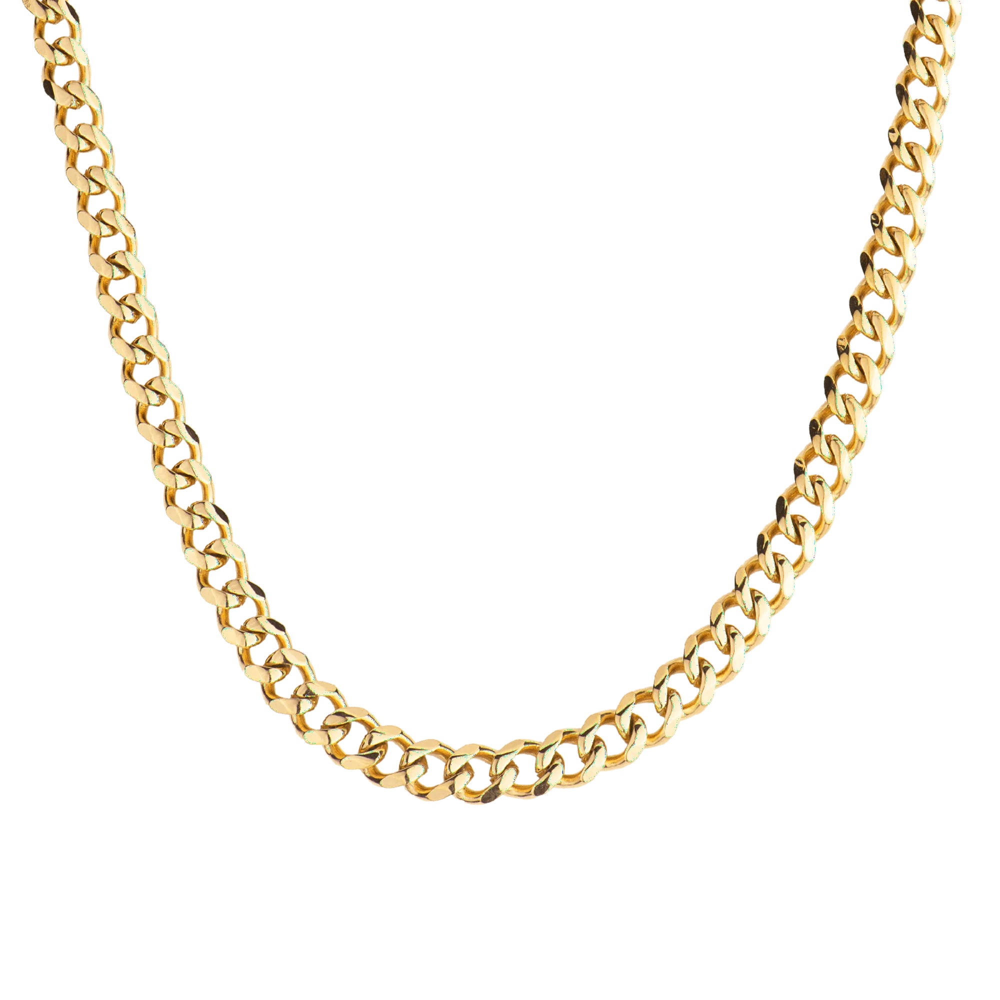
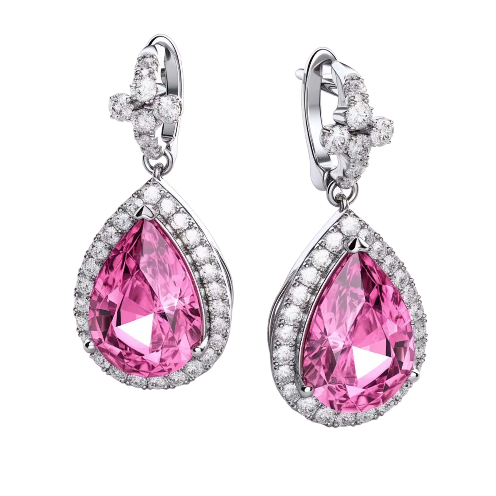

Cadenas
¡Descubre la exquisita selección de cadenas de oro de Joyerías MANGATA! Sumérgete en un mundo de elegancia y sofisticación con nuestras cadenas de oro amarillo, blanco y rosa, diseñadas para realzar la belleza y el estilo de la mujer contemporánea..
Anillos
En el maravilloso viaje hacia el matrimonio, las argollas desempeñan un papel fundamental al simbolizar la unión eterna entre dos almas enamoradas.En mangata.com, nos enorgullece ofrecerte una exclusiva selección de argollas de matrimonio para perdurar a lo largo del tiempo y convertirse en un testamento duradero de tu amor.
Aretes
Sumérgete en el universo de la sofisticación con Joyerías mangata y descubre la colección más deslumbrante de aretes, arracadas y broqueles. En un mundo donde el lujo se encuentra con la elegancia atemporal, nuestras piezas en oro amarillo, rosa y blanco son el epítome de la moda y la distinción.
Descubre mas...